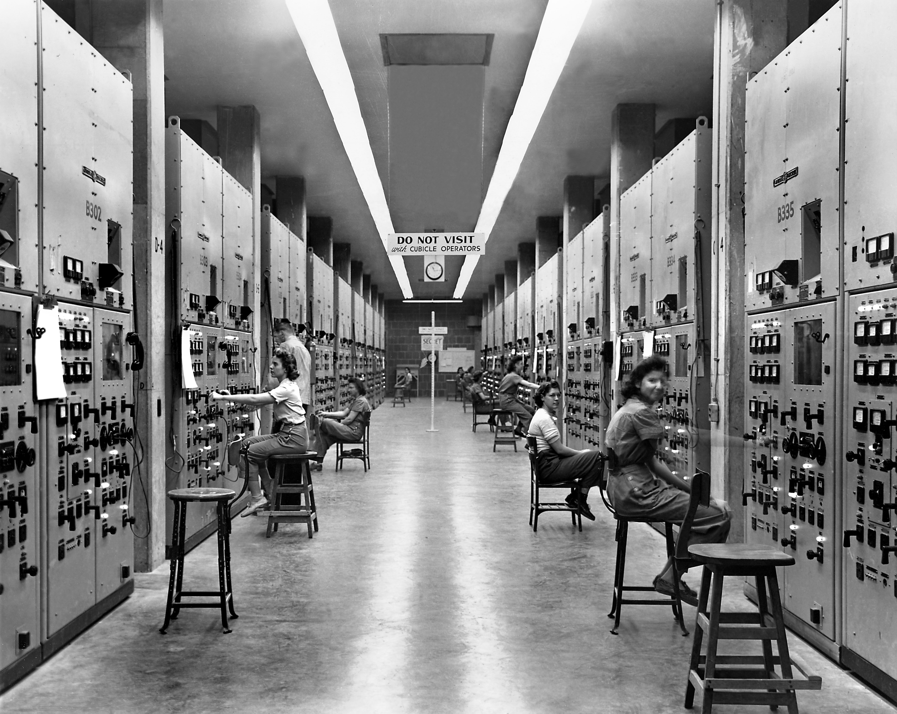
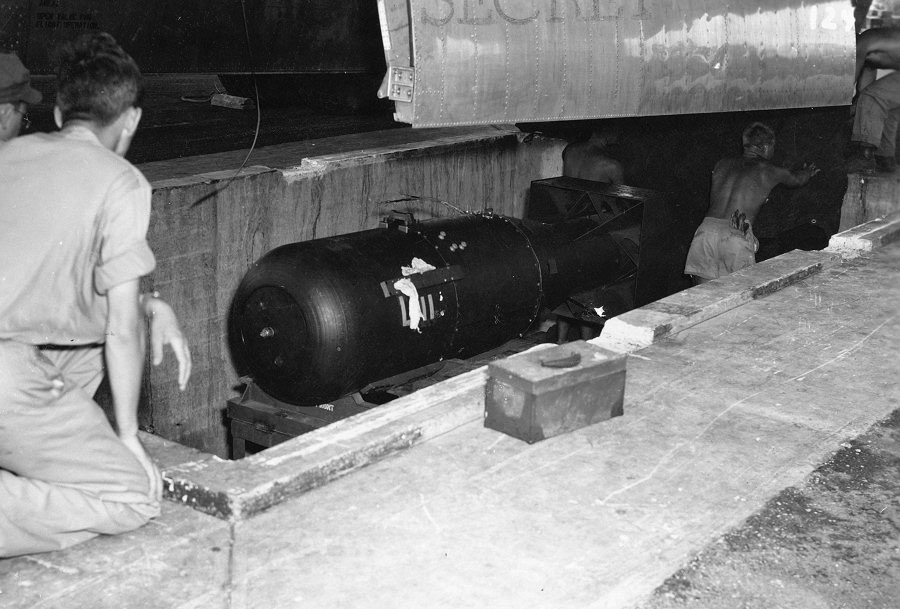

<%- include('./layout/header'); -%> <%- include('./layout/banner'); -%>
Other countries that are also
developing nuclear weapons
蘇聯
蘇聯在二戰期間展開了自己的原子彈研發計劃，被稱為「蘇聯原子彈計劃」。該計劃由伊戈爾·庫爾恰托夫（Igor Kurchatov）領導，於1949年成功地進行了首次核試驗，成功爆炸了一個原子彈。這使得蘇聯成為世界上第二個擁有核武器的國家。
英國
英國也在二戰期間開展了自己的核武器研發計劃，被稱為「英國核武器計劃」。該計劃於1952年成功進行了首次核試驗，使英國成為世界上第三個擁有核武器的國家。英國的核武器計劃在曼哈頓計劃的啟發下進行，並得到了美國的技術支援。
中國
中國在曼哈頓計劃期間還未進行核武器研發，但在1950年代開始了自己的核武器計劃。中國進行了多次核試驗，並於1964年成功地開發出自己的第一枚核彈。此後，中國在核武器技術和軍事應用方面不斷發展，並成為世界上五個擁有核武器的國家之一。
其他國家
在曼哈頓計劃期間，其他一些國家也開始進行核武器研發計劃，包括法國、印度、巴基斯坦等。這些國家在不同的時間段內成功地開發出自己的核武器。此外，有一些國家簽署了《核武禁擴條約》，承諾不發展核武器，而專注於和平利用核能。
《核武禁擴條約》
於1968年簽署，並於1970年生效。該條約的主要目標是防止核武器的擴散，並推動核裁軍。它旨在通過以下三個核心原則實現這一目標：
- 不核擴散原則：核武器國家承諾不將核武器傳播給其他國家，非核武器國家承諾不尋求、接受或製造核武器。
- 裁軍原則：核武器國家承諾逐步削減和消除核武器，並在良好信譽下進行誠實而真實的裁軍談判。
- 和平利用原則：所有國家享有和平利用核能的權利，同時核非擴散不得削弱該權利。
《核武禁擴條約》的爭議與挑戰
儘管《核武禁擴條約》在防止核武器擴散方面取得了一些成就，但它也面臨一些批評和挑戰。有些國家批評核武器國家沒有履行其裁軍義務，而核武器國家則認為國際環境和地區安全形勢需要保留核武器。此外，有時該條約也受到違反和退出的挑戰。
 
<%- include('./layout/footer'); -%>